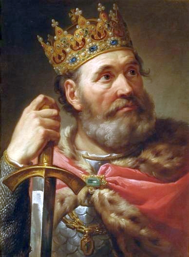
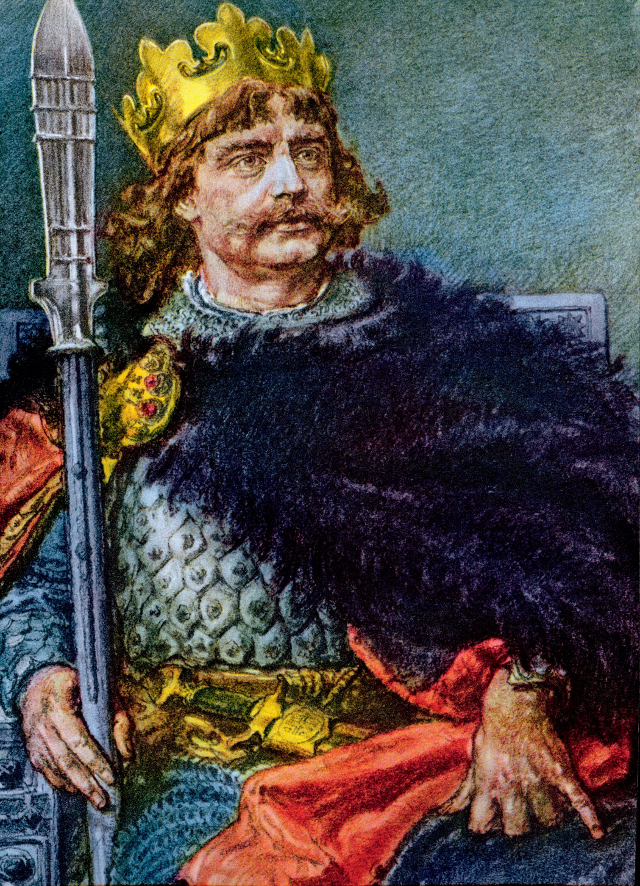
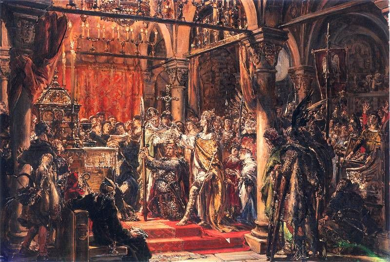
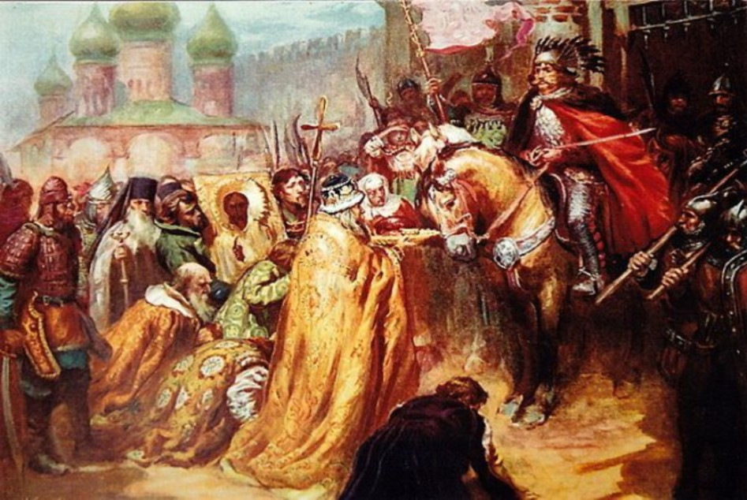
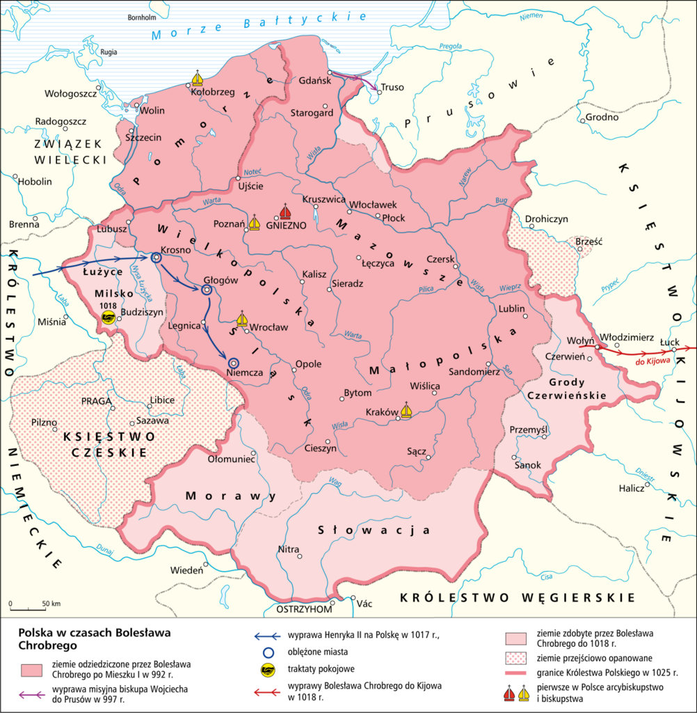
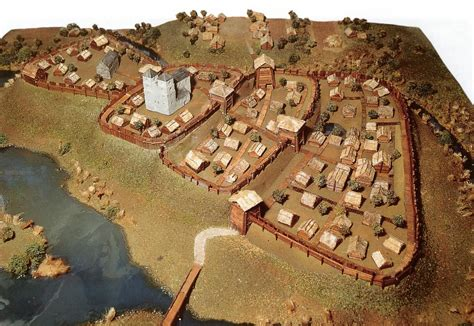
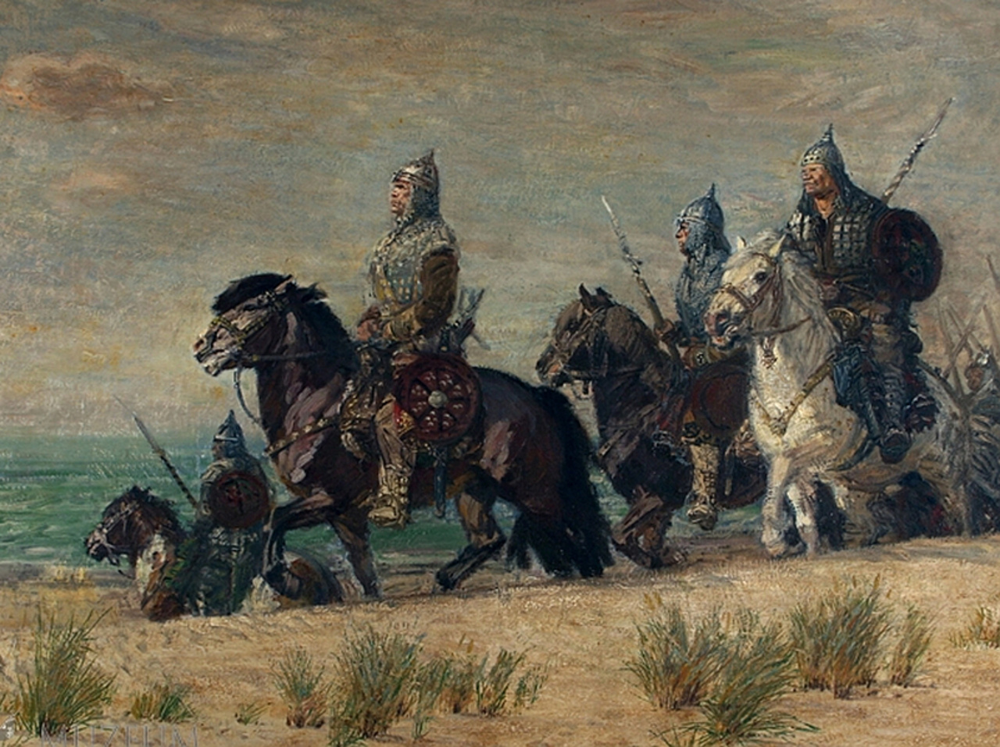

Bolesław Chrobry

Inny wizerunek Bolesława Chrobrego

Koronacja pierwszego króla Polski w 1025 - Jan Matejko

Bolesław Chrobry jako jeden z dwóch polaków wkroczył paradnie do
Kijowa (w 1018r.)
- dokonał tego jeszcze tylko Józef Piłsudzki

Granice Polski za czasów panowania Bolesława Chrobrego

Budowa grodu - czasy Bolesława Chrobrego i Mieszka I

Wojsko Bolesława Chrobrego